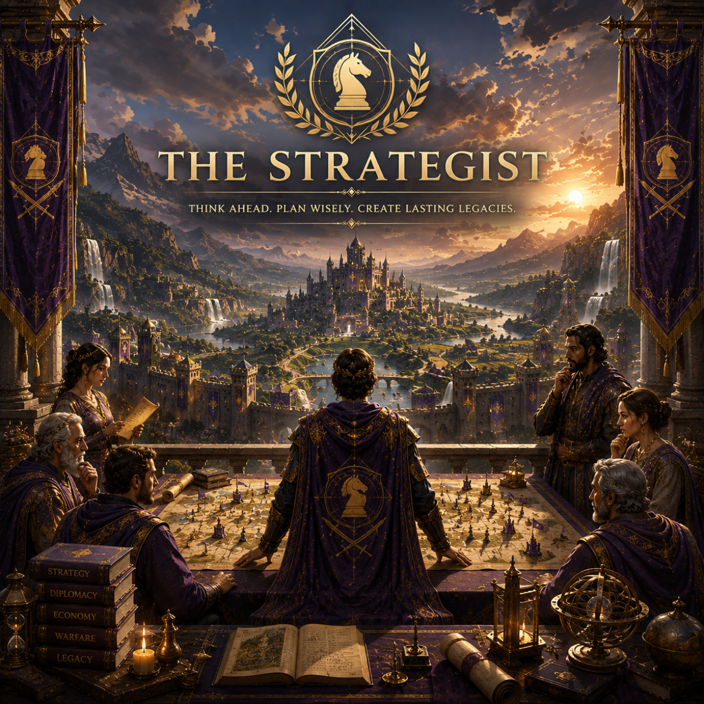

HOW YOU DECIDE
You naturally look beyond the immediate outcome. You tend to compare risks, alternatives and future consequences before making an important move.
Build a civilization. Make choices. Discover the kind of leader you become.
Heavy rain has arrived earlier than expected. Your farmers see an opportunity, but the roads are beginning to deteriorate.
Your civilization begins its first era.

Your choices reveal a tendency to think ahead, weigh consequences and preserve options before committing to a path.
You naturally look beyond the immediate outcome. You tend to compare risks, alternatives and future consequences before making an important move.
You are more comfortable when you understand where a decision may lead. You often prefer creating stability and preserving possibilities rather than acting simply for the sake of action.
You can remain thoughtful when circumstances become complicated. You are capable of seeing connections between decisions that other people may treat as separate.
Careful thinking can become overthinking. When too much depends on getting the decision right, you may delay action or protect future possibilities at the expense of the present moment.
You naturally think several moves ahead.